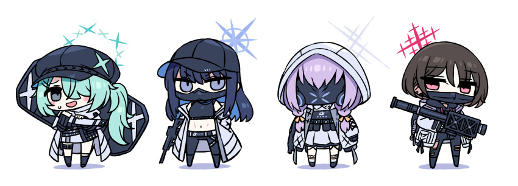
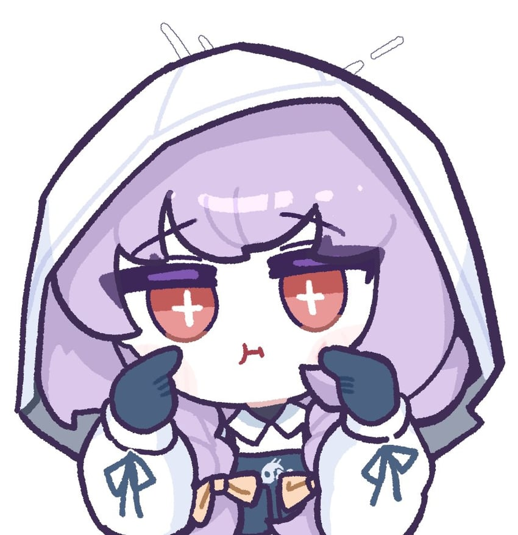
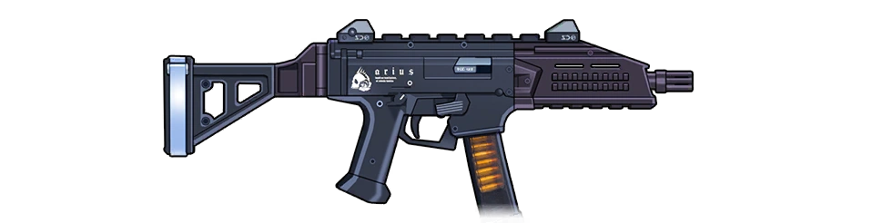

Profile
Introduction
One of the four members of Arius Branch School's elite Arius Squad. She's silent and always communicates through sign language, but perhaps there's more to this than meets the eye. Her squadmates call her "princess," and Saori in particular seems very protective of her.
Personality
Atsuko may be very silent, but she has a kind heart. Compared to the rest of the Arius Squad and possibly all of Arius, Atsuko appears to be the kindest, having a personality that can be considered quite exceptional in Arius.
Firearm
She utilize a CZ Scorpion Evo 3 A1 with an Arius logo decal on the right side of the receiver, and a decal of the school's motto on the left side.